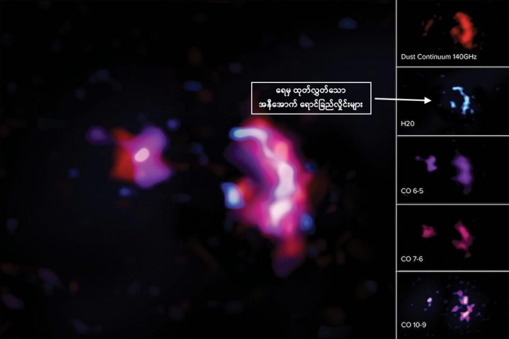

ဒီ ရှာဖွေ တွေ့ရှိချက်ကို Atacama Large Millimeter/sub-millimeter Array (ALMA) ရေဒီယို တယ်လီ စကုပ် ကြီးကနေ ရှာဖွေ တွေ့ရှိ ခဲ့တာ ဖြစ်ပါတယ်။ ရှာဖွေ တွေ့ရှိ ခဲ့တဲ့ စကြာဝဠာ ခေတ်ဦး ဂလက်ဆီ ကတော့ SPT0311-58 လို့ အမည်ပေး ထားတဲ့ ဧရာမ ဂလက်ဆီ ကြီး ဖြစ်ပါတယ်။
ဒီ ဂလက်ဆီ ကြီးဟာ ကမ္ဘာက နေဆိုရင် အလင်းနှစ် ၁၂.၈၈ ဘီလီယံ ကွာပါတယ်။ တနည်း ပြောရရင် အခု တွေ့မြင်ရတဲ့ ဂလက်ဆီရဲ့ အခြေအနေက လွန်ခဲ့တဲ့ နှစ်ပေါင်း ၁၂.၈၈ ဘီလီယံ အလွန်က အခြေ အနေ ဖြစ်ပါတယ်။ ဒီကာလဟာ စကြာဝဠာ ဖြစ်ပေါ်လာတဲ့ Big Bang ကြီး အပြီး နှစ်သန်း ၇၈၀ ပဲ ရှိပါသေးတယ်။ တနည်းအားဖြင့် စကြာဝဠာရဲ့ အစောပိုင်း ခေတ်ဦး ကာလက ဂလက်ဆီပါ။
ဒီ ဂလက်ဆီ ကြီးထဲမှာ ရေ (H2O) နဲ့ ကာဗွန်မို နောက်ဆိုဒ် (CO) ဓါတ်တွေကို အမြောက်အများ တွေ့ရှိ ရတယ်လို့ ဆိုပါတယ်။ ဒါဟာ ဘာကို ပြနေလဲဆို စကြာဝဠာ အစောပိုင်း ကာလ ကတဲက မော်လီကျူးတွေ စပြီး ဖန်တီး နေနိုင်ပြီ ဆိုတာကို ပြနေတာပါ။
အခု ပြုလုပ်တဲ့ သုတေသနဟာ စကြာဝဠာ အစောပိုင်း ကာလက ဓါတ်ငွေ့ မော်လီကျူး တွေနဲ့ ပါတ်သက်လို့ လေ့လာခဲ့သမျှ သုတေသန တွေအထဲမှာ အသေးစိတ် အကျဆုံး သုတေသန ဖြစ်ပါတယ်။ နောက်ပြီး လေ့လာ တွေ့ရှိ ခဲ့သမျှ ထဲမှာ အဝေးဆုံး အရပ်မှာ ရေ ရှာဖွေ တွေ့ရှိ ခဲ့တာလဲ ဖြစ်ပါတယ်။
အခု တွေ့ရှိ ချက်တွေကို နက္ခတ်ရူပ ဗေဒ (The Astrophysical Journal) ဂျာနယ်ကြီးမှာ တင်ပြထားတာ ဖြစ်ပါတယ်။
အခု ရေ တွေ့တဲ့ SPT0311-58 ဂလက်ဆီဟာ တကယ် ကတော့ ဂလက်ဆီ နှစ်ခု ပေါင်းနေတာ ပါ။ သူ့ကို ၂၀၁၇ မှာ ပထမဆုံး ရှာဖွေ တွေ့ရှိ ခဲ့ပါတယ်။ ဒီဂလက်ဆီ ရှိတဲ့ အရပ်ဒေသဟာ စကြာဝဠာကြီး အစောပိုင်း အမှောင်ခေတ် (Dark Age) လွန်မြောက်စ ကြယ်တွေ၊ ဂလက်ဆီတွေ စတင် ဖြစ်ပေါ်လာတဲ့ Epoch of Reionization ခေတ် ဖြစ်ပါတယ်။ (ဒီ ခေတ်ကို အခုမှ လှမ်းမြင်ရတာပါ)။ ဒီကာလက Big Bang အပြီး နှစ်သန်း ၇၈၀ လောက် အကြာမှာ စတင် ဖြစ်ထွန်းခဲ့တယ်လို့ ခန့်မှန်းရပါတယ်။ ဒီကာလမှာ စကြာဝဠာရဲ့ ပထမဆုံးသော ကြယ်တွေ၊ ဂလက်ဆီတွေ စတင် ပေါက်ဖွားလာပါတယ်။
သိပ္ပံ ပညာရှင် တွေက ဒီ SPT0311-58 မှာ ပါတဲ့ ဂလက်ဆီ နှစ်ခုဟာ ပူးပေါင်း နေတယ် လို့ ယူဆကြပါတယ်။ ဒီလို ပူးပေါင်း တဲ့ အချိန် ဖြစ်ထွန်းလာတဲ့ မြောက်များလှစွာသော ကြယ်အသစ်တွေဟာ ဒီ ဂလက်ဆီကြီး ထဲက ဓါတ်ငွေ့တွေကို ကုန်စင်အောင် သုံးစွဲ ပစ်လိုက်ကြလိမ့်မယ်လို့ ယူဆရပါတယ်။ ဒါ့အပြင် ဒီ ကြယ်အသစ်တွေ ကြောင့်လဲ ဒီ ဂလက်ဆီရဲ့ ပုံသဏ္ဍာန်က elliptical ခေါ်တဲ့ ဘဲဥပုံ ဂလက်ဆီ ကြီး ဖြစ်လာမယ်လို့ ဆိုပါတယ်။
အားကောင်းတဲ့ တယ်လီစကုပ်တွေ အသုံးပြုပြီး သုတေသန ပြုမှုအရ အခု ပေါင်းနေတဲ့ ဂလက်ဆီ နှစ်ခုအနက် ပိုကြီးတဲ့ ဂလက်ဆီ ထဲမှာ ရေ နဲ့ ကာဗွန်မို နောက်အိုဒ် ဓါတ်တွေ တွေ့ရှိ ခဲ့ကြတာပါ။
ကာဗွန် နဲ့ အောက်ဆီ ဂျင် တို့ဟာ ကြယ်တွေထဲက နျူကလိယ ပေါင်းစပ် ဓါတ်ပြုမှု (Nuclear Fusion) ဖြစ်စဉ်မှာ ကနဦး ထွက်လာကြတဲ့ ဒြပ်စင်တွေ ဖြစ်ကြပါတယ်။ ကြယ်တွေ ထဲက ဟီလီယံ ဓါတ်ငွေ့တွေ လောင်ကြွမ်းပြီး ကာဗွန်၊ အောက်ဆီဂျင်နဲ့ အခြား ပေါ့ပါးတဲ့ ဒြပ်စင်တွေ ဖြစ်လာပါတယ်။ ဒီ ကာဗွန်နဲ့ အောက်ဆီဂျင် ပေါင်းစပ်ပြီး ဖြစ်လာတဲ့ ကာဗွန်မိုနောက်ဆိုဒ် နဲ့ ဟိုက်ဒရိုဂျင်နဲ့ ပေါင်းစပ်ပြီး ဖြစ်လာတဲ့ ရေ တို့ဟာ သက်ရှိတွေ ဖြစ်ထွန်းရေး အတွက် မရှိ မဖြစ် လိုအပ်တဲ့ ဒြပ်ပေါင်းတွေ ဖြစ်ကြပါတယ်။
“အခု ဂလက်ဆီဟာ စကြာဝဠာ အစောပိုင်း ကာလ ဂလက်ဆီ တွေအထဲမှာ ကြီးဆုံး ဂလက်ဆီ ကြီးပဲ ဖြစ်ပါတယ်။ အခြား ဂလက်ဆီ တွေထက်စာရင် ဓါတ်ငွေ့နဲ့ ဖုန်မှုန့်တွေလဲ ပါဝင်တဲ့ အချိုး ကလဲ ပိုများပါတယ်။ ဒါ့ကြောင့် သူ့ထဲမှာ ပါဝင် ဖွဲ့စည်း ထားတဲ့ ဓါတ်ငွေ့တွေနဲ့ ဒြပ်ပေါင်းတွေကို ရှာဖွေဖို့ အခွင့်အလမ်းတွေ ရရှိတာ ဖြစ်ပါတယ်။ ဒီ ဒြပ်ပေါင်းတွေကို လေ့လာခြင်း အားဖြင့် စကြာ ဝဠာ အစောပိုင်း ကာလမှာ ဒီဒြပ်ပေါင်းတွေရဲ့ အရေးပါမှုကို ပိုပြီး သဘောပေါက်လာမှာ ဖြစ်ပါတယ်” လို့ ဒီ သုတေသန ကို ဦးဆောင်တဲ့ အီလီနွိုက်စ် တက္ကသိုလ် က နက္ခတ် ပညာရှင် ဆရီဗာနီ ဂျာရူဂူလား (Sreevani Jarugula) က ရှင်းပြပါတယ်။
တကယ်တော့ ‘ရေ’ ဟာ စကြာဝဠာ ထဲမှာ ဟိုက်ဒရိုဂျင် နဲ့ ကာဗွန်မို နောက်ဆိုဒ် တို့ ပြီးရင် အပေါ်များဆုံး ဒြပ်ပေါင်း ဖြစ်ပါတယ်။ ကမ္ဘာနဲ့ အနီး ပါတ်ဝန်းကျင်က ဂလက်ဆီတွေကို လေ့လာချက် အရ ကြယ်တွေက ထုတ်လွှတ်တဲ့ ခရမ်းလွန် ရောင်ခြည် (Ultraviolet, UV) ကို ဖုန်မှုန့်တွေက စုပ်ယူထားတယ်လို့ ဆိုပါတယ်။ ဒီလို စုပ်ယူ လိုက်ပြီးနောက် အနီအောက် ရောင်ခြည်လွန် ဖိုတွန် (Far-infrared photon) တွေအဖြစ် ပြန်ထုတ် ပေးပါတယ်။ (Far infrared ဆိုတာက အနီအောက် ရောင်ခြည်လှိုင်းမှာမှ လှိုင်းအလျှား ရှည်တဲ့ အနီအောက် ရောင်ခြည်ကို ခေါ်တာ ဖြစ်ပါတယ်)။
ဒီ ထွက်လာတဲ့ အနီအောက် ရောင်ခြည်လွန် ဖိုတွန် တွေဟာ သူနဲ့ တိုက်မိတဲ့ ရေ မော်လီကျူး တွေရဲ့ စွမ်းအင် ကို ပြောင်းသွား စေပါတယ်။ ဒီလို စွမ်းအင် ပြောင်းသွားတဲ့ ရေ မော်လီကျူး တွေဟာ အနီအောက် ရောင်ခြည် ပြန်ထုတ်လွှတ် ပေးပါတယ်။ (ဒါကို water emission) လို့ ခေါ်ပါတယ်။ ဒီ ရေကနေ ထွက်လာတဲ့အနီအောက် ရောင်ခြည်မှာ တိကျတဲ့ လှိုင်းအလျှား ရှိတာမို့ ရေဒီယို တယ်လီ စကုပ် ကြီးတွေကနေ ဒီ လှိုင်းအလျှားကို ဖမ်းယူပြီး ရေ ရှိမရှိ ကြည့်ရှုကြတာ ဖြစ်ပါတယ်။ (အသေးစိတ်ကို ဒီမှာ ဖတ်ကြည့် နိုင်ပါတယ် Detecting water in space and why it matters | Oxford University)

စကြာဝဠာ အစောပိုင်းက မထမဦးဆုံး ဖြစ်ထွန်းခဲ့တဲ့ ဂလက်ဆီ တွေကို လေ့လာ ခြင်းအားဖြင့် စကြာဝဠာ ကြီးရဲ့ မွေးဖွားမှု၊ ဖွံ့ဖြိုးလာမှုနဲ့ ပြောင်းလဲလာမှု တွေကို ပိုပြီး နားလည် လာနိုင်မှာ ဖြစ်ပါတယ်။ ကျွန်တော်တို့ရဲ့ နေအဖွဲ့အစည်း ဖြစ်တည်လာမှု နဲ့ ပါတ်သက်လို့လဲ ပိုသဘောပေါက်လာ ပါလိမ့်မယ်။
“ခေတ်ဦး ဂလက်ဆီ တွေမှာ ကြယ်သစ်တွေ ဖြစ်တဲ့ နှုန်းဟာ ကျွန်တော်တို့ မစ်ကီးဝေး ဂလက်ဆီ ကြီးထဲမှာ ကြယ်သစ် ဖြစ်တဲ့ နှုန်းထက် အဆပေါင်း ထောင် သောင်းချီအောင် ပိုမြန်ပါတယ်။ ဒီ ခေတ်ဦး ဂလက်ဆီ တွေထဲက ဓါတ်ငွေ့တွေနဲ့ ဖုန်မှုန့် တိမ်တိုက် တွေကို လေ့လာခြင်း အားဖြင့် ဒီ ကြယ်သစ်တွေ ဖြစ်ပေါ်မှု နဲ့ ပါတ်သက်လို့ အသေးစိတ်တွေ သိလာ ရပါတယ်။ ဥပမာ ကြယ်သစ်တွေ ဘယ်လောက်တောင် များသလဲ၊ ဓါတ်ငွေ့ကနေ ကြယ်တွေ ဖြစ်တဲ့ နှုန်းက ဘယ်လောက်တောင် မြန်သလဲ၊ ဂလက်ဆီတွေကရော တစ်ခုနဲ့ တစ်ခု ဘယ်လို သက်ရောက်မှု ရှိသလဲ အစရှိတာ မျိုးတွေကို သိလာရပါတယ်။” လို့ သုတေသန အဖွဲ့ခေါင်းဆောင် ဂျာရူဂူလား က ဆက်ပြောပါတယ်။
ဂျာရူဂူလား ရဲ့ အဆိုအရတော့ အခု ဒီ ခေတ်ဦး ဂလက်ဆီ နဲ့ ပါတ်သက်လို့ လေ့လာ စရာတွေ အများကြီး ကျန်သေးတယ်လို့ ဆိုပါတယ်။ “အခု သုတေသနက စကြာဝဠာထဲမှာ ဘယ်လောက် စောစော ကတဲက ရေရှိနေ ပြီလဲ ဆိုတဲ့ မေးခွန်းရဲ့ အဖြေကို ထုတ်ပေးလိုက်တာပါ။ ဒါပေမယ့် သူကလဲထပ်ပြီး တွေးစရာ မေးခွန်းတွေ ထပ်ထုတ်ပေး ပြန်ပါတယ်။ ဥပမာ – ဘာ့ကြောင့် ဒီလောက် စောစော ပိုင်း ကတဲက ဒီလောက်များတဲ့ ဓါတ်ငွေ့တွေ၊ ဖုန်မှုန့်တွေ စုမိပြီး ဂလက်ဆီ ကြီးတွေ ဖြစ်လာရ တာလဲ ဆိုတဲ့ မေးခွန်းမျိုးပေါ့။ ဒီမေးခွန်းကို ဖြေနိုင်ဖို့ ကတော့ နောက်ထပ် သုတေသန တွေ ထပ်လုပ်ဖို့ လိုအပ်နေပါတယ်” လို့ ဖြည့်စွက် ပြောကြား ခဲ့ပါတယ်။
ဒီ ALMA ရေဒီယို တယ်လီစကုပ် လေ့လာရေး အစီအစဉ် ကြီးရဲ့ ညွှန်ကြားရေးမှူး ဖြစ်တဲ့ ဂျိုးပက်စီ (Joe Pesce) ကတော့ “အခု တွေ့ရှိချက်က အလွန် စိတ်လှုပ်ရှားဖွယ် ကောင်းတဲ့ တွေ့ရှိချက် ဖြစ်ပါတယ်။ ဒီ တွေ့ရှိချက်က ALMA တယ်လီစကုပ်ကြီးရဲ့ ထောက်လှမ်းနိုင်စွမ်း ကိုလဲ မှတ်ကျောက်တင် ပေးထာ ဖြစ်ပါတယ်။ အခု မော်လီကျူး တွေဟာ ကမ္ဘာပေါ်မှာ သက်ရှိတွေ ဖြစ်ထွန်းလာဖို့ မရှိမဖြစ် အရေးပါတဲ့ မော်လီကျူးတွေ ဖြစ်ကြပါတယ်။ ဒီ မော်လီကျူး တွေကို စကြာဝဠာကြီးက အစောပိုင်း ကတဲက စတင် ဖန်တီး ခဲ့တယ် ဆိုတာ အခု တွေ့ရှိချက်က ပြနေပါတယ်။ ဒီ အချက်က ရှေးဦး စကြာ ဝဠာ နဲ့ ပါတ်သက်တဲ့ အခြေခံ ဖြစ်စဉ်တွေကို ကျွန််တော်တို့ ပိုနားလည်အောင် အထောက်အကူ ပြုနေပါတယ်” လို့ ပြောကြား သွားပါတယ်။
Reference: Water – A Requirement for Life As We Know It – Detected in a Galaxy Far, Far Away | Scitech Daily